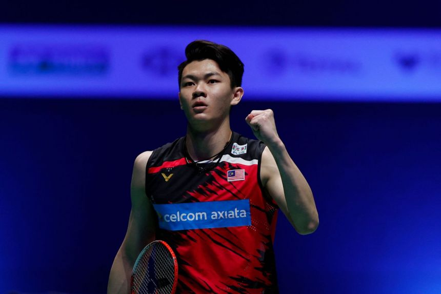

李梓嘉（英:Lee Zii Jia 出生于1998年3月29日-）马来西亚男子羽毛球运动员。同时，其胞姐李梓瑜同为马来西亚国家羽毛球队成员。
李梓嘉出生於運動世家，父親李志興和母親廖雪萍都曾經是籃球國手，姐姐李梓瑜也是前羽毛球國手，弟弟李绹則是前州手。 他自5歲起在父母的安排下開始打羽毛球，並在亞羅士打吉華H校度過小學時光。 李梓嘉從小也喜歡打籃球，NBA籃球巨星科比·布萊恩特也是他的偶像。 由於在12歲以下的羽毛球比賽成績突出，他很快被選進武吉加里爾體育學校。 然而，他在體校六年期間的成績不算太突出。及至2015年，他才取得較大進步，一舉拿下霹靂與吉隆坡公開賽的青年組冠軍，也在國際賽打出一些成績；終在年底的國羽後備隊選拔賽，憑出色表現被選入國家隊。 李梓嘉身高187公分，手長腳長，是國家隊中罕有的“高佬”，更被喻為“大馬安塞龍”；但他也明白自己的最大弱點是打法欠穩定性，導致常犯下不少低級失誤。
2016年7月，李梓嘉代表馬來西亞參加泰國曼谷舉辦的亞洲青年羽毛球錦標賽，在男單四分之一決賽中以2-1（22-20、11-21、15-21）的成績不敵來自台灣的李佳豪。 同年9月，他出戰波蘭羽毛球國際賽，在男單準決賽以0比2（16-21、15-21）不敵賽會4號种子、印度名將的沙魯巴·維爾馬。 同年11月，他代表馬來西亞參加西班牙畢爾巴鄂舉行的世界青年羽毛球錦標賽，以次號种子身份出戰男單比賽，他在半決賽以0比2（18-21、19-21）不敵印尼的奇科·奧拉·德維·瓦多約，獲得季軍。 同期11月，他出戰印度羽毛球國際系列賽，在男單決賽以1比3（13-11、3-11、6-11、6-11、6-11）不敵印度新星的叻斯亞·森，贏得亞軍。
2017年2月，李梓嘉出戰泰國羽毛球大師賽，在男單準決賽以1比2（21-15、18-21、20-22）不敵泰國名將的坎塔蓬·旺差倫。 同年6月，他出戰中華台北羽毛球公開賽，在男單準決賽以1比2（21-15、10-21、12-21）不敵賽會頭號种子、東道主的周天成。 同年7月，他出戰馬來西亞羽毛球國際系列賽，在男單準決賽以0比2（17-21、19-21）不敵賽會11號种子、隊友的詹俊為。 同年8月，他代表馬來西亞參加本國舉辦的東南亞運動會羽毛球比賽，助馬來西亞隊贏得男子團體銀牌 同年9月，他出戰波蘭羽毛球國際賽，在男單決賽以2比0（21-17、21-16）擊敗隊友兼賽會第2種子宋浚洋，贏得成年組賽事冠軍，亦是他首個國際系列賽男單冠軍；李梓嘉在賽后表示：“這是他去年加入國家隊後的首個國際賽冠軍，並希望接下來能夠收穫更多冠軍。 同期9月，他出戰捷克羽毛球公開賽，在男單準決賽以0比2（8-21、10-21）不敵世錦賽季軍的桃田賢鬥。 同年10月，他出戰碧特博格羽毛球黃金大獎賽，在男單準決賽以0比2（11-21、12-21）不敵丹麥名將的拉斯穆斯·傑姆克。
同年2月，李梓嘉代表马来西亚参加本国举办的亚洲羽毛球团体锦标赛，助球队赢得男子团体季军。 同年10月，他出战中华台北羽毛球公开赛，在男单决赛以2比1（21-17、16-21、21-11）击败了日本名将的武下利一，赢得成年组赛事冠军，亦是他首个超级300赛男单冠军。
同年3月，李梓嘉代表馬來西亞參加全英羽毛球公開賽，在8強複賽中對決日本首席桃田賢鬥，他成功以2比0（21-16、21-19）首次擊敗桃田賢鬥進入4強，打破兩人自2017年9月捷克公開賽開始以來，桃田取得6連勝的氣勢。 之後在半決賽上，李梓嘉再次以2比0（21-13、21-17）兩局直落擊敗荷蘭選手馬克·卡爾尤，首次闖入決賽，為大馬第7位打進全英決賽的男單選手。 決賽上，李梓嘉迎戰丹麥衛冕冠軍、世界排名第2的維克托·阿薩爾森，成功在74分鐘內以2比1（30-29、20-22、21-9）擊敗對手，成為第6位[注1]贏得全英賽男單冠軍得大馬羽毛球球員。
同年3月22號，李梓嘉在世界羽球男子單打的排名當中從第10位提升到第8位。